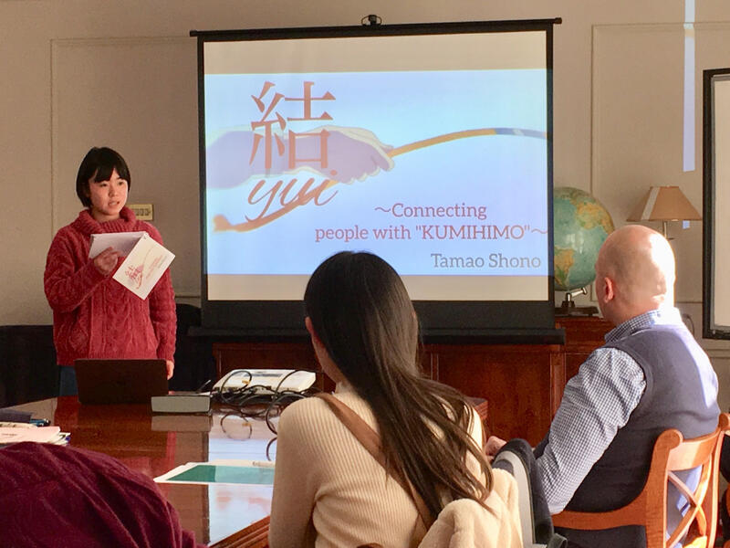
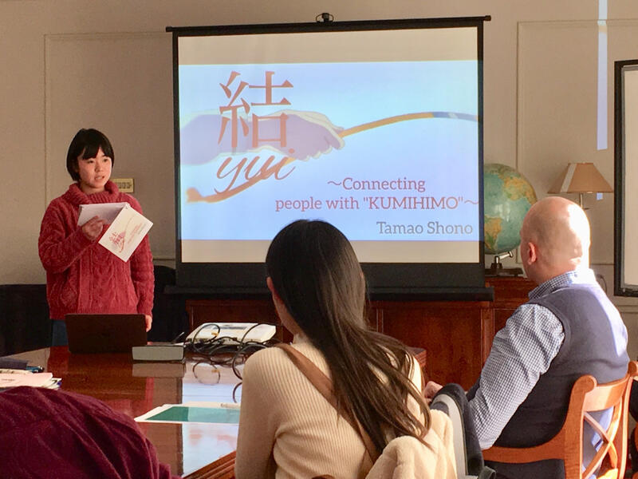
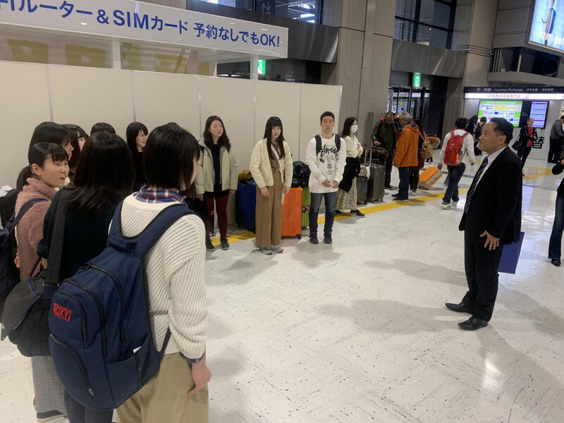
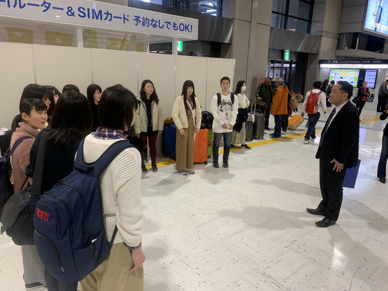
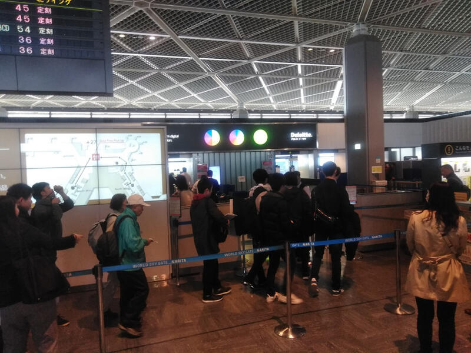
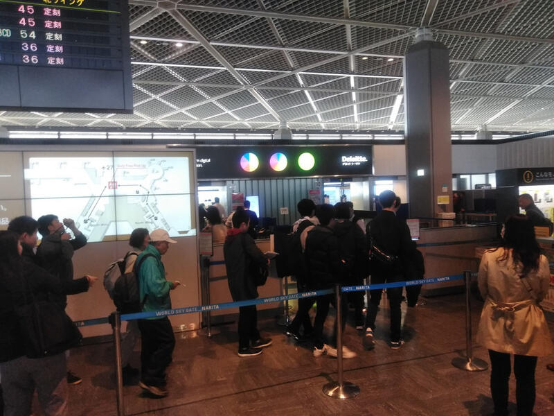
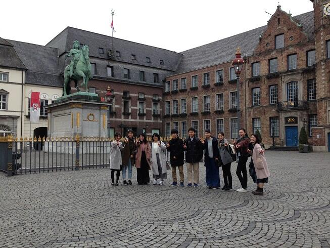
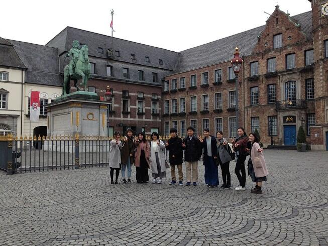

文字
背景
行間

カテゴリ:SGH海外研修関係
SGHイギリス海外研修４
平成３１年３月２７日（現地時間）ホームステイのファミリーと別れ、バッキンガム宮殿、大英博物館などを見学しました。
平成３１年３月２８日（現地時間）本日帰国しますが、飛行機の離陸時間が１時間遅れます。予定されていた出発時刻が、１３：５０から１４：５０に変更されました。

SGHイギリス海外研修３
平成３１年３月２６日（現地時間）イギリス研修に参加している２年生１２名は、Holy Port Collegeにて現地の高校生と交流するとともに、課題研究の発表を行いました。午前中はアクティビティを通して英語でコミュニケーションを取り、午後は課題研究の発表と質疑応答を英語で行いました。
SGHイギリス海外研修２
平成３１年３月２５日（現地時間） 本日はロンドンのジャパン・ハウスとクレアロンドンを訪問しました。ジャパン・ハウスでは、イギリスで日本をどのように発信しているのか等について説明していただき、その後質疑応答を英語で行いました。またクレアロンドンでは生徒の課題研究の発表を行い、助言をいただきました。なお、昨日は、ホームステイ先のファミリーと終日交流しました。


SGHイギリス海外研修
平成３１年３月２３日（土）（現地時間）本日は、オックスフォードの大学生と交流し、大学生に向けて課題研究の内容についてプレゼンテーションを行いました。発表後は質疑応答を英語で行い、大学生の皆さんから御助言をいただきました。生徒は研究内容について考えを深めることができました。


SGHイギリス海外研修へ出発
平成３１年３月２２日（金）本校生徒１２名は、ＳＧＨイギリス海外研修に出発しました。成田国際空港に午前１０時に集合し、出発式を行ないました。空港にお勤めの本校卒業生の方から激励のお言葉と温かいお気持ちを頂戴しました。一行は出国手続きを経て１２時３５分発の飛行機でロンドンへ向かいました。研修は３月２９日まで行なわれます。



SGHドイツ海外研修 課題研究発表
平成３１年３月１８日（現地時間） デュッセルドルフ市にある学校Cecilien Gymnasiumを訪問し、同校の生徒と1日交流しました。午前中は2グループに分かれ、Cecilien Gymnasiumの生徒に対し、課題研究のプレゼンテーションを英語で行いました。発表後の質疑応答等で一層考えを深めることができました。
お昼は、訪問校の生徒の手作りの寿司やケーキなどをいただきながら、交流を深めました。その後、日本語を勉強している学生と学校生活などについて話し合いました。
SGHドイツ海外研修４
平成３１年３月１６日（現地時間）旧西ドイツの首都ボンを訪れました。最初にボン歴史博物館を訪れ、第二次世界大戦下から東西分裂時代、現代に至るドイツの歴史について学びました。その後、ボンの街を散策し、ベートーヴェンの生家や銅像、市庁舎などを巡りました。午後は、ドイツに留学している本校生徒と一緒にケルン大聖堂を見学しました。巨大かつ繊細なゴシック様式の建築に圧倒されました。
SGHドイツ海外研修３
平成３１年３月１５日（現地時間）本校生徒１１名は、まず、アウグストゥスブルグ城を訪れました。生徒ロココ様式の豪華絢爛な装飾に見入っていました。午後は、デュッセルドルフ大学を訪問しました。生徒はグループに分かれて、大学生に課題研究のプレゼンテーションを英語で行い、大学生から助言をいただきました。その後、日本語を勉強している学生と日本語で交流しました。
SGHドイツ海外研修２
平成３１年３月１４日（現地時間）本校生徒１１名は、在デュッセルドルフ日本国領事館を訪問しました。総領事と副総領事に領事館の仕事などについてお話しいただき、生徒は興味深く聞いていました。また、生徒は、課題研究の発表を英語で行い、質問に対して英語でしっかりと答えることができました。（写真左上）
その後、市のガイドの方にデュッセルドルフ市内を案内していただきました。生徒はあいにくの雨にも負けず、積極的に参加していました。（写真中・右上）
デュッセルドルフ市庁舎では、市長をはじめ職員の方々が大変温かく迎えてくださいました。デュッセルドルフやドイツについて、派遣生徒の課題研究テーマに関する内容にも触れながらお話しいただきました。（写真下）
SGH ドイツ海外研修
平成31年3月13日、2年生11名がドイツのデュッセルドルフに出発しました。午前8時45分から成田空港で出発式を行い、成田空港にお勤めの本校同窓会(鹿山会)の方から激励のお言葉をいただきました。その後手続きを経て、ドイツに旅立ちました。デュッセルドルフでは、大学や高校を訪問し、課題研究の発表やディスカッションなどを行います。研修は3月19日まで行います。


オランダ派遣から無事帰国
平成３０年１１月２５日（日）成田国際空港にオランダ派遣生徒５名が予定時間より若干早く帰ってきました。全員元気です。空港で簡単に解団式を行い、１０時４０分に解散しました。１１月１５日から今日までいろいろな経験をし、交友関係も広めてきました。


オランダ派遣報告６
平成３０年１１月２２日（木）・２３日（金）（オランダ時間）
２２日は、２０日に提示されたテーマについてグループで話し合い、プレゼンテーションの準備に取り組みました。
２３日は、グループごとにプレゼンテーションを行い、それぞれの考えが示されました。その後、ドラードカレッジ、ホストファミリーに別れを告げ、アムステルダムに移動しました。全員元気です。１１月２５日（日）（日本時間）に帰国予定です。

２２日は、２０日に提示されたテーマについてグループで話し合い、プレゼンテーションの準備に取り組みました。
２３日は、グループごとにプレゼンテーションを行い、それぞれの考えが示されました。その後、ドラードカレッジ、ホストファミリーに別れを告げ、アムステルダムに移動しました。全員元気です。１１月２５日（日）（日本時間）に帰国予定です。
オランダ派遣活動報告５
平成３０年１１月２１日（水）（オランダ時間）
国際青少年会議出席者とアムステルダムに研修に出かけました。国立美術館、ゴッホ美術館、アムステルダム市立美術館を見学した後、市内を散策しました。
国際青少年会議出席者とアムステルダムに研修に出かけました。国立美術館、ゴッホ美術館、アムステルダム市立美術館を見学した後、市内を散策しました。
オランダ派遣活動報告４
平成３０年１１月２０日（火）（オランダ時間）
本日は、国際青少年会議２日目。１３から１４名でグループを作り、与えられたテーマについて話し合いました。その結果は最終日に発表します。
今年のテーマは"What will the society look like in the coming decades?"です。
テーマに関する活動の他、Painting (Tシャツの模様作り)や、Diembe (アフリカのドラム)、Zumba (ダンス)に取り組みました。


本日は、国際青少年会議２日目。１３から１４名でグループを作り、与えられたテーマについて話し合いました。その結果は最終日に発表します。
今年のテーマは"What will the society look like in the coming decades?"です。
テーマに関する活動の他、Painting (Tシャツの模様作り)や、Diembe (アフリカのドラム)、Zumba (ダンス)に取り組みました。
オランダ派遣活動報告３
平成３０年１１月１９日（月）（オランダ時間）
ドラードカレッジで国際青少年会議が開かれ、オランダ、フィンランド、ポーランド、イタリア、ドイツ、日本（佐倉高校）から６か国、１０９名の生徒たちが参加しています。
高校のプレゼンテーションを行いましたが、佐倉高校は堂々と発表することができました。もしっかりやり遂げました。その後、異文化理解に関する講義を聴いたり、お互いのことを知り合う活動に取り組みました。


ドラードカレッジで国際青少年会議が開かれ、オランダ、フィンランド、ポーランド、イタリア、ドイツ、日本（佐倉高校）から６か国、１０９名の生徒たちが参加しています。
高校のプレゼンテーションを行いましたが、佐倉高校は堂々と発表することができました。もしっかりやり遂げました。その後、異文化理解に関する講義を聴いたり、お互いのことを知り合う活動に取り組みました。
オランダ派遣活動報告２
平成３０年１１月１７日（土）（オランダ時間）
アンネフランクの家を訪問後、アムステルダムからドラードカレッジのあるウィンシュホーテンへ列車で移動しました。夕刻、ホストファミリーと対面し、それぞれホームステイ先に向かいました。全員元気です。この後５日間、ウィンシュホーテンに滞在して活動する予定です。


アンネフランクの家を訪問後、アムステルダムからドラードカレッジのあるウィンシュホーテンへ列車で移動しました。夕刻、ホストファミリーと対面し、それぞれホームステイ先に向かいました。全員元気です。この後５日間、ウィンシュホーテンに滞在して活動する予定です。
オランダ派遣活動報告１
平成３０年１１月１６日（金）（オランダ時間）
一行は、国立民族学博物館、ライデン大学（学生との交流、ディスカッション）、シーボルト博物館等を巡り、研修を深めました。全員元気です。


一行は、国立民族学博物館、ライデン大学（学生との交流、ディスカッション）、シーボルト博物館等を巡り、研修を深めました。全員元気です。
オランダに到着しました。
平成３０年１１月１６日（金）、オランダ派遣に参加した生徒は無事ライデンに到着しました。
オランダ派遣に出発しました。
平成３０年１１月１５日（木）第１学年生徒５名がオランダに向けて出発しました。出発前に成田空港にお勤めの本校同窓会の方から激励の言葉等をいただき、その後出国手続きを行いました。現地ではライデン大学の学生との交流、アンネフランクの家訪問等課題研究に係るフィールドワーク、ドラードカレッジでの国際青少年会議出席と盛りだくさんの研修を行います。本日から１１月２５日まで実施します。なお、オランダ派遣は今年で２０回目です。

SGHシンガポール海外研修
平成３０年９月１５日（土）全員元気に帰国しました。午前８時２０分、成田空港到着ロビーに集合し、研修終了式を行いました。課題研究の発表に手応えを感じた、シンガポールに友人ができた等の声が聞こえました。充実した研修となりました。
SGHシンガポール研修３日目
平成３０年９月１４日（金）シンガポール研修３日目。シンガポール現地校、セント ジョセフ インスティテューションでSGH課題研究の発表、ディスカッション、授業体験、交流等を行いました。
SGHシンガポール研修２日目
平成３０年９月１３日（木）シンガポール研修２日目。本日午前中は、シンガポール国立博物館を訪ね、イングリッシュガイドにより、理解を深めました。午後はクレアシンガポールで研修を行い、課題研究に係る指導をしていただきました。
全員元気に研修に取り組んでいます。
全員元気に研修に取り組んでいます。
ＳＧＨシンガポール海外研修１日目
平成３０年９月１２日（水）シンガポール海外研修１日目。現地に到着後、モスク等を見学したり、街の様子を観察したりするなど、多文化共生に向けた個々のテーマに合わせ、フィールドワークを行いました。
SGHシンガポール海外研修
平成３０年９月１２日（水）ＳＧＨシンガポール海外研修に本校第２学年生徒１１名が出発しました。羽田空港に午前７時１５分に集合し（写真左上）、出発式（写真右上・左下）を行った後、出国手続に向かいました（写真右下）。本日から９月１５日（土）までシンガポールで研修を行います。
!(^^)! 一行は、予定どおり、無事シンガポールに到着しました（日本時間 午後５時２０分）。 !(^^)!
!(^^)! 一行は、予定どおり、無事シンガポールに到着しました（日本時間 午後５時２０分）。 !(^^)!
ナンボークリスチャンカレッジの研修を終了しました。
平成３０年８月１日（水）ナンボークリスチャンカレッジでの研修が終わりました。翌２日（木）は、クイーンズランド大学を訪問し、多文化共生に係る講義を受講したり、大学生とのディスカッションを行ったりしました。全員元気です。
（ナンボークリスチャンカレッジにて）
（大学にて）
（ナンボークリスチャンカレッジにて）
（大学にて）
オーストラリア研修１２日目
オーストラリア研修１１日目
平成３０年７月３０日（月）本日も全員元気に研修に参加しています。写真は、「こたつ」「いただきます」「お疲れ様です」「なつかしい」「もったいない」「しょがない」「単身赴任」「ハンパない」「やばい」等、日本の言葉について英語で説明しているところです。
オーストラリア研修８日目
平成３０年７月２７日（金）オーストラリア研修８日目を迎えました。生徒は今日も全員元気に活動しています。写真は今日の活動の様子です。現地校８年生と映画について話し合いをしているところです。生徒は英語を使うことにも慣れ、英語によるコミュニケーション能力の向上が見られます。
オーストラリア研修（日本文化プレゼンテーション）
平成３０年７月２６日（木）オーストラリア研修に参加している生徒は全員元気に活動しています。本日は、日本の文化を現地の高校生に紹介するプレゼンテーションを行っています。
今日もオーストラリアで元気に活動中
平成30年7月23日（月）は、現地校で日本語クラスの生徒に本校生徒が日本語を教えました。7月24日（火）は、８年生の授業に参加しています。


ナンボークリスチャンカレッジでの研修が始まりました
 平成30年７月23日(月)オーストラリア研修では、予定どおりナンボークリスチャンカレッジでの研修が始まりました。英語力の向上、異文化理解の深化、課題研究の深化を目指します。参加生徒は全員元気に研修に参加しています。
平成30年７月23日(月)オーストラリア研修では、予定どおりナンボークリスチャンカレッジでの研修が始まりました。英語力の向上、異文化理解の深化、課題研究の深化を目指します。参加生徒は全員元気に研修に参加しています。 オーストラリアに無事到着しました
 平成30年7月21日（土）オーストラリア研修参加者一行は、全員無事にオーストラリアに入国しました。健康状態も良好です。ゴールドコースト空港から、博物館等を見学をしながらナンボークリスチャンカレッジに向かいます。いよいよ研修の始まりです。
平成30年7月21日（土）オーストラリア研修参加者一行は、全員無事にオーストラリアに入国しました。健康状態も良好です。ゴールドコースト空港から、博物館等を見学をしながらナンボークリスチャンカレッジに向かいます。いよいよ研修の始まりです。 オーストラリアに出発しました
平成30年7月20日（金）午後6時45分、オーストラリア研修に参加する本校2年生20名が成田国際空港に集合しました。出発にあたって、成田国際空港にお勤めの本校同窓生の方から激励の言葉をいただきました。校長先生からの挨拶、引率の先生のお話、旅行業者の方の説明を経て、出国手続きに入りました。一行は予定どおり午後9時5分の飛行機でオーストラリアに向かいました。８月3日までドラードカレッジでの研修やSGH課題研究に係る研修等を行います。


平成２９年度ＳＧＨイギリス海外研修に出発しました
平成３０年３月２２日（木）午前７時３０分、羽田空港にイギリス海外研修に参加する本校生徒１５名が集合しました。全員元気な様子で、出発式、出国手続等を済ませ研修に出発しました。イギリスでは、現地の大学生や高校生に向けて課題研究の発表やディスカッション、フィールドワーク等を行います。帰国は３月２９日です。
SGHドイツ海外研修は順調です。
SGHドイツ海外研修は予定どおり進んでいます。写真はJETROを訪問し課題研究のプレゼンテーションをしているところ、デュッセルドルフ市庁を訪問し、説明を聞いたり、課題研究に係ることを調査したりしているところです。




SGHドイツ海外研修に出発しました。
平成３０年３月１４日（水）ドイツ海外研修に参加する２年生１０名が成田空港からデュッセルドルフに出発しました。空港では、本校同窓会ＮＡＡグループ鹿山会の方から激励のお言葉をいただきました。今月の２０日まで研修を実施します。現地の高校で課題研究のプレゼンテーション、デュッセルドルフ大学でのディスカッション、ドイツでのフィールドワーク等が予定されています。

SGH海外研修（オランダ派遣）帰国
11月9日に出国しオランダで研修を行っていた１年生５名が無事帰国しました。最初のうちは、英語でのコミュニケーションや文化の違いによるとまどい等があったようです。しかし、フィールドワークを経て、日本とオランダの価値観や考え方の相違を学んだり、国際青少年会議に参加することにより、参加国それぞれの教育や学校の仕組み等について知るとともに、参加国の高校生と意見を交わしたりすることができました。いろいろな意味で成長できた研修でした。今後は報告等を行うことで、研修を還元します。
SGH海外研修（オランダ派遣）に出発しました。
平成２９年１１月９日（木）午前９時１５分に成田国際空港に集合しました。
参加者は、第１学年生徒５名です。
出発式では、ＮＡＡグループ鹿山会の方から、お言葉をいただくとともに、本校の先輩として激励の言葉もいただきました。

今日から１１月１９日（日）までの１１日間、ライデン・アムステルダムでのフィールドワーク（ライデン大学にて学生とのディスカッション、シーボルト博物館など）、ドラードカレッジにて青少年国際会議参加等の研修が行われます。

参加者は、第１学年生徒５名です。
出発式では、ＮＡＡグループ鹿山会の方から、お言葉をいただくとともに、本校の先輩として激励の言葉もいただきました。
今日から１１月１９日（日）までの１１日間、ライデン・アムステルダムでのフィールドワーク（ライデン大学にて学生とのディスカッション、シーボルト博物館など）、ドラードカレッジにて青少年国際会議参加等の研修が行われます。
SGH海外研修（シンガポール）
平成２９年９月１３日（水）から１６日（土）まで２年生１７名がＳＧＨ海外研修（シンガポール）を行います。
羽田空港に午前７時１５分に集合し、午前９時１５分発の飛行機でシンガポールに向かいました。
シンガポールでは、企業や博物館等での研修、現地の高校で課題研究の成果の発表及びディスカッションを行う予定です。
９月１３日午後５時現在、一行は無事シンガポールに到着しホテルに向かっています。

羽田空港に午前７時１５分に集合し、午前９時１５分発の飛行機でシンガポールに向かいました。
シンガポールでは、企業や博物館等での研修、現地の高校で課題研究の成果の発表及びディスカッションを行う予定です。
９月１３日午後５時現在、一行は無事シンガポールに到着しホテルに向かっています。
オーストラリア短期研修（ＳＧＨ海外研修）
平成２９年７月２１日から８月５日まで、第２学年生徒２０名がオーストラリアで研修を行いました。
Ｙｅａｒ１０の生徒約１００名を対象に、課題研究について発表しました。
日本語を学習しているＹｅａｒ８の生徒約１００名を対象に、日本文化についてプレゼンテーションを行いました。
クィーンズランド大学を訪問し、大学生とディスカッションをしたり、模擬授業を受けたりしました。
Ｙｅａｒ１０の生徒約１００名を対象に、課題研究について発表しました。
日本語を学習しているＹｅａｒ８の生徒約１００名を対象に、日本文化についてプレゼンテーションを行いました。
クィーンズランド大学を訪問し、大学生とディスカッションをしたり、模擬授業を受けたりしました。
オーストラリア短期研修（ＳＧＨ海外研修）
平成２９年７月２１日（金）から８月５日（土）まで、２年生２０名がオーストラリアで研修を行います。２１日（金）午後６時に成田国際空港に集合し、ＮＡＡグループ鹿山会の皆様から激励のお言葉をいただきました。その後手続き、出発式を行い、午後８時５０分発の飛行機でブリスベンに向かいました。７月２５日（火）午後２時現在、研修は順調に進んでいます。


中学生の皆さんへ
在校生・卒業生の方へ
アクセスカウンタ
2
0
4
4
7
3
9
リンクリスト